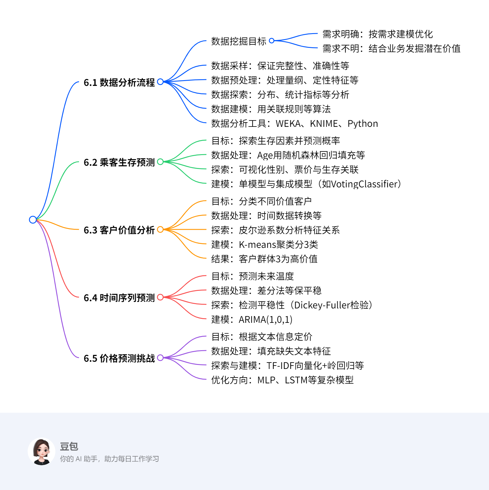

第六章：数据科学实践¶
总览¶
一段话总结¶
文档围绕数据科学实践展开，首先介绍数据分析流程，包括明确数据挖掘目标（分需求明确与不明情况）、数据采样（需保证完整性等）、预处理（处理量纲等问题）、探索（分布等分析）、建模（用关联规则等算法）及工具（如Python）；接着通过四个案例实践，泰坦尼克号乘客生存预测中对Age等特征预处理并建模，客户价值分析用K-means聚类分高、中、低价值客户，时间序列预测用ARIMA算法处理温度数据，价格预测挑战用TF-IDF和岭回归等处理文本信息，各案例均涵盖目标、数据处理、建模及结果分析等关键环节。
思维导图¶

详细总结¶
第六章 数据科学实践¶
6.1 数据分析流程¶
- 数据挖掘目标：需求明确时针对需求建模优化，不明确时结合业务发掘数据潜在价值，如电商系统中差异化营销、刷单分析、销售趋势预测等。
- 数据采样：需保证数据完整性（处理缺失值）、准确性（排重纠错）、一致性（统一特征描述）、及时性（更新最新数据）。
- 数据预处理：解决量纲不一致（标准化等）、定性特征（哑编码）、缺失值（均值/回归填充）、异常值（依场景处理）。
- 数据探索：通过分布分析（直方图）、统计指标（集中/离中趋势）、周期性（时序数据）、关联分析（皮尔逊系数）观察数据规律。
- 数据建模：用关联规则、监督/无监督学习算法从数据中找规律预测。
- 数据分析工具：WEKA（开源机器学习软件）、KNIME（模块化数据流水线）、Python（灵活数据处理与算法封装）。
6.2 乘客生存预测案例¶
- 目标：探索泰坦尼克号乘客生存因素，据信息预测生存概率。
- 数据字段：含Age、Fare、Sex等12个字段。
- 数据预处理：
- Cabin缺失值赋'U0'或二值化（1/0）。
- Embarked用众数填充。
- Age用RandomForestRegressor回归预测填充。
- Sex转二值变量（男0女1），Fare分箱离散化，丢弃无用特征。
- 数据探索：可视化性别、票价与生存关联，如女性生存概率更高。
- 模型构建：用决策树、随机森林等单模型及VotingClassifier集成模型。
6.3 客户价值分析案例¶
- 目标：分类不同价值客户，制定个性化服务。
- 数据字段：含Flight_count、Avg_discount等8个字段。
- 数据处理：Fare等缺失值按案例1处理，时间数据用间隔代替。
- 数据探索：皮尔逊系数显示Flight_count、Flight_mileage和Avg_discount相关性强。
- 模型构建：K-means聚类分3类（高、中、低价值）。
- 结果：
| 客户类别 | 聚类个数 | Flight_count | Avg_discount | Flight_mileage | Months |
|---|---|---|---|---|---|
| 客户群体1 | 5304 | -0.0934 | 0.0048 | -0.1481 | 1.2378 |
| 客户群体2 | 4287 | -0.5537 | 0.5205 | -0.6870 | -0.5909 |
| 客户群体3 | 3688 | 0.7654 | -0.6482 | 0.9774 | -0.3325 |
6.4 时间序列预测案例¶
- 目标：据二战时期温度记录预测未来温度。
- 数据字段：含STA、Date、MeanTemp。
- 数据探索：温度具季节性，用滚动平均和Dickey-Fuller检验平稳性。
- 数据处理：差分法和滚动平均法使序列平稳。
- 模型构建：ARIMA(1,0,1)，据ACF和PACF确定参数p=1、q=1。
6.5 价格预测挑战案例¶
- 目标：据商品描述、类别和品牌信息定价。
- 数据字段：含name、brand_name等7个字段。
- 数据处理：category_name和brand_name缺失值填充标识符。
- 探索与建模：TF-IDF向量化文本，用岭回归建模，可优化为MLP、LSTM等复杂模型。
关键问题¶
- 数据分析流程包含哪些核心步骤？
- 答：包含数据挖掘目标确定（分需求明确与不明）、数据采样（保证完整性等）、数据预处理（处理量纲、缺失值等）、数据探索（分布、关联等分析）、数据建模（用算法找规律）、数据分析工具选择（如Python）。
- 乘客生存预测案例中，Age特征如何处理？
- 答：因逃生遵循“妇女、儿童和老人优先”，不直接用均值/众数填充，而是用RandomForestRegressor回归模型，以Fare、Pclass等完整特征为输入，预测缺失的Age值。
- 时间序列预测中，如何确定ARIMA模型的参数？
- 答：通过自相关函数（ACF）和偏自相关函数（PACF）确定，PACF第一次越过上置信区间的滞后值为p（如p=1），ACF第一次越过上置信区间的滞后值为q（如q=1），d为差分阶数（使序列平稳的差分次数，此处d=0）。
6.1 数据分析流程¶
6.1 数据分析流程¶
6.1.1 数据挖掘目标¶
- 核心定义：明确数据分析的方向，分为两种场景：
- 需求明确：针对具体需求构建模型并优化，例如电商系统中根据用户消费水平实现差异化营销。
- 需求不明：结合业务背景发掘数据潜在价值，如分析商家销售行为识别刷单现象。
- 电商场景案例：
- 目标1：对不同用户群体推荐商品，实现精准营销。
- 目标2：通过销售行为和评分分析刷单行为，提升平台信誉。
- 目标3：基于历史销售数据预测趋势，推荐当季商品。
6.1.2 数据采样¶
- 质量要求：确保数据完整、准确、一致、及时，避免“脏数据”影响分析。
- 具体策略：
- 完整性：处理缺失值，如根据场景用均值、回归等方法填充。
- 准确性：去重、纠错，排除错误数据。
- 一致性：统一不同分析人员对数据特征的描述标准。
- 及时性：实时更新数据，避免因数据滞后导致问题。
6.1.3 数据预处理¶
- 处理对象：原始数据中不完整、异常、量纲不一致或定性特征等问题。
- 关键方法及例子：
- 量纲不一致：使用标准化法（如Z-score）或区间放缩法（如Min-Max），例如将身高（cm）和体重（kg）统一量纲。
- 定性特征：通过哑编码转换为定量数据，如性别“男/女”转换为[1,0]或[0,1]。
- 缺失值填充：
- 简单方法：用均值、中位数、众数填充，如填充年龄缺失值用均值。
- 回归填充：用RandomForestRegressor根据Fare、Pclass等特征预测Age缺失值。
- 异常值处理：依场景判断，如金融数据中大额交易可能为异常值，需单独分析或剔除。
6.1.4 数据探索¶
- 核心目的：分析干净数据的规律、趋势及价值。
- 分析方法及实例：
- 分布分析：绘制频率直方图或茎叶图，观察数据分布，如分析学生成绩分布判断是否符合正态分布。
- 统计指标分析：
- 集中趋势：计算均值、中位数、众数，如某班级平均成绩。
- 离中趋势：计算方差、标准差，如各学生成绩与平均分的离散程度。
- 周期性分析：对时序数据（如气温）用时序算法捕捉季节周期性。
- 关联分析：用皮尔逊系数、判定系数分析变量相关性，如身高与体重的相关性。
6.1.5 数据建模¶
- 核心逻辑：通过算法发掘数据潜在规律，与数据探索的浅分析不同，需构建具体模型。
- 算法类型及应用：
- 关联规则：如“购物篮分析”中发现“买啤酒的人常买尿布”。
- 监督学习：用随机森林、SVM等对泰坦尼克号乘客数据建模预测生存概率。
- 无监督学习：用K-means对客户价值分群，识别高价值客户。
6.1.6 数据分析工具¶
- 工具特点及应用场景：
- WEKA：开源机器学习软件，支持预处理、分类、聚类和可视化，适合初学者用Java或命令行操作。
- KNIME：基于Java的模块化数据流水线工具，集成多种机器学习组件，适合流程化分析。
- Python：
- 优势：有Pandas、Scikit-learn等库，支持数据提取、处理及算法封装。
- 应用：用Pandas读取CSV数据，用Scikit-learn的StandardScaler进行标准化。
6.2 案例1-乘客生存预测¶
6.2.1 数据挖掘目标¶
- 背景：泰坦尼克号沉船事件中，2224名乘客和机组人员中有1502人死亡，生存与性别、年龄、社会阶层等因素相关。
- 目标：探索影响生存的因素，基于乘客信息预测生存概率。
6.2.2 数据导入与字段说明¶
- 数据导入：
- 使用
pandas读取训练集和测试集：train_data = pd.read_csv(...)、test_data = pd.read_csv(...)。 - 合并数据并标记测试集生存状态：
test_data['Survived'] = 0、concat_data = train_data.append(test_data)。
- 使用
- 核心字段：
Age（年龄）、Fare（票价）、Pclass（船舱等级）、Sex（性别）、Survived（是否获救）等-。
6.2.3 数据预处理¶
缺失值处理¶
- Cabin特征：
- 方案1：缺失值赋特定标签
U0：concat_data['Cabin'] = concat_data.Cabin.fillna('U0')。 - 方案2：二值化表示有无船舱（有舱为
1，无舱为0）-。
- 方案1：缺失值赋特定标签
- Age特征：
- 原因：逃生遵循“妇女、儿童优先”，直接填充均值不合理。
- 步骤：
- 用
Fare、Pclass等特征构建随机森林回归模型。 - 划分训练集（
Age非空）和预测集（Age空值）。 - 训练模型：
regr = RandomForestRegressor(n_estimators=1000)。 - 预测并填充缺失值：
concat_data.loc[concat_data.Age.isnull(), 'Age'] = predict_ages。
- 用
- Fare与Embarked：
Fare按船舱等级用众数填充，Embarked用众数或均值填充-。
特征转换¶
- 定性特征处理：
Sex转二值变量：男性→0，女性→1，使用pd.get_dummies生成哑变量-。
- 量纲统一：
Age标准化：StandardScaler().fit_transform(concat_data.Age.values.reshape(-1,1))。
- 特征离散化：
Fare分5箱并因子化：pd.qcut(concat_data.Fare, 5)→pd.factorize。
- 无用特征丢弃：
- 移除
Embarked、PassengerId、Name等不相关特征。
- 移除
6.2.4 数据探索¶
- 可视化分析：
- 性别与生存：按
Sex分组计算Survived均值，绘制柱状图，显示女性生存概率显著高于男性-。 - 票价与生存：用箱线图展示不同
Survived状态下的Fare分布，高票价群体生存概率更高。
- 性别与生存：按
6.2.5 模型构建¶
单模型与集成模型¶
- 单模型：决策树、随机森林、支持向量机（SVM）、神经网络等。
- 多模型集成：
- 方法：使用
VotingClassifier集成多个模型，采用soft voting策略。 - 示例配置：
- estimators = [('rfc', 随机森林), ('dtc', 决策树), ('svm', SVM)]
- weights = [1, 1, 3]（SVM权重更高）。
- 方法：使用
6.2.6 关键求解步骤总结¶
- 数据预处理流程：
- 缺失值填充（Age用回归，Cabin用二值化）→ 定性特征转换 → 标准化与离散化 → 丢弃无用特征。
- 模型训练示例：
- 集成模型训练：
vclf.fit(预处理后数据, 生存标签)，通过权重分配提升预测精度。
- 集成模型训练：
6.3 案例2 – 客户价值分析¶
6.3.1 数据挖掘目标¶
- 背景：信息时代企业面临用户喜好捕捉困难，需通过海量数据分类客户，区分价值并制定个性化服务，实现利润最大化。
- 优化目标：无具体预设目标，需通过数据分析发掘潜藏价值，如识别高价值客户群体。
6.3.2 数据导入与字段说明¶
- 数据字段：
Start_time：初次飞行时间Fare：飞行费用Age：年龄Avg_discount：平均折扣率End_time：最近飞行时间City：生活城市Flight_count：飞行次数Flight_mileage：飞行里程数
6.3.3 数据预处理¶
缺失值处理¶
- 方法：沿用案例1的处理方式，对
Fare、City、Age的缺失值采用均值、众数或回归填充。
时间数据转换¶
- 问题：
Start_time和End_time为字符串类型，需转换为可分析的数值特征。 - 方案：用时间间隔（如“最近飞行时间-初次飞行时间”）代替原始时间字段，反映用户活跃周期。
6.3.4 数据探索¶
相关性分析¶
- 方法：计算皮尔逊系数矩阵，分析特征间相关性。
- 关键发现：
Flight_count（飞行次数）、Flight_mileage（飞行里程数）、Avg_discount（平均折扣率）三者相关性较强。- 例如：飞行次数越多，飞行里程数通常越高，而平均折扣率可能越低（高价值客户享受折扣较少）。
6.3.5 模型构建：K-means聚类¶
特征选择¶
- 丢弃
Fare、Age等相关性较弱或非核心特征，保留Flight_count、Avg_discount、Flight_mileage、Months（飞行时间间隔）。
聚类步骤¶
- 数据准备：标准化或归一化特征，确保量纲一致。
- 模型训练：
- 分群结果：将客户分为3类（高、中、低价值）。
聚类中心分析¶
| 客户类别 | 聚类个数 | Flight_count | Avg_discount | Flight_mileage | Months |
|---|---|---|---|---|---|
| 客户群体1 | 5304 | -0.0934 | 0.0048 | -0.1481 | 1.2378 |
| 客户群体2 | 4287 | -0.5537 | 0.5205 | -0.6870 | -0.5909 |
| 客户群体3 | 3688 | 0.7654 | -0.6482 | 0.9774 | -0.3325 |
6.3.6 结果分析与营销策略¶
高价值客户识别¶
- 客户群体3特征：
Flight_count和Flight_mileage数值最大（飞行频繁、里程长）。Avg_discount数值最小（折扣率低，支付能力强）。
- 策略：优先提供个性化服务（如专属客服、高端权益），提升满意度以延长消费周期。
中低价值客户特征¶
- 客户群体2：平均折扣率高但飞行次数少，可能为促销敏感型客户，可通过限时折扣刺激消费。
聚类应用价值¶
- 通过分群实现资源精准投放，例如针对高价值客户减少折扣，针对促销敏感型客户推送优惠活动，最大化企业利润。
6.3.7 关键求解流程总结¶
- 数据预处理：
- 缺失值填充 → 时间数据转换为间隔特征 → 标准化处理。
- 相关性分析：
- 计算皮尔逊系数 → 筛选核心特征（飞行次数、里程数、折扣率等）。
- 聚类分群：
- 确定聚类数k=3 → 训练K-means模型 → 分析聚类中心特征。
- 策略制定：
- 根据各群体特征设计差异化营销策略，如高价值客户聚焦服务质量，中低价值客户聚焦折扣激励。
6.4 案例3 – 时间序列预测¶
6.4.1 数据挖掘目标¶
- 背景：基于二战时期某气象站的温度记录数据（含时间标签），通过历史温度序列预测未来该地区的温度变化。
- 核心差异：与回归分析不同，时间序列预测依赖数据的先后顺序（改变顺序会影响模型结果），需捕捉时序特征。
6.4.2 数据导入与字段说明¶
- 数据字段：
STA：气象台站号（标识站点）。Date：温度测量时间（时序关键特征）。MeanTemp：平均温度值（目标预测变量）。
6.4.3 数据探索¶
季节性分析¶
- 方法：绘制
MeanTemp随Date变化的时间序列图。 - 结论：温度呈现明显季节性规律（夏季高温、冬季低温），需在模型中考虑季节性因素。
平稳性检测¶
- 滚动平均与方差：
- 计算固定窗口（如5期）的滚动均值和标准差，观察是否随时间波动。
- 若均值/方差显著变化，说明序列非平稳。
- Dickey-Fuller检验：
- 原理：检验序列是否存在单位根（非平稳的标志）。
- 决策规则：p值<0.05时拒绝原假设（序列平稳）。
6.4.4 数据处理：平稳化序列¶
差分法¶
- 公式：
timeSeries_diff = timeSeries - timeSeries.shift(periods=1)（一阶差分）。 - 作用：消除序列中的趋势和季节性，例如对温度序列做一阶差分后，可减弱长期趋势影响。
滚动平均法¶
- 公式：
[\hat{y_t} = \frac{x_{t-1} + x_{t-2} + ... + x_{t-N}}{N}] （N为窗口大小，如N=5时取最近5期均值）。 - 代码示例：
timeSeries_moving_diff = timeSeries.rolling(5).mean()。 - 效果：使序列均值趋于稳定，适用于短期平滑预测。
6.4.5 模型构建：ARIMA算法¶
模型原理¶
- 核心思想：将非平稳序列转化为平稳序列后，建立“自回归（AR）+差分（I）+移动平均（MA）”的组合模型。
- 参数含义：
p：自回归阶数（依赖过去p期值）。d：差分阶数（使序列平稳的差分次数）。q：移动平均阶数（依赖过去q期误差）。
参数确定方法¶
- ACF（自相关函数）：
衡量相距k期的序列值相关性，用于确定q值（ACF首次超出置信区间的滞后值）。 - PACF（偏自相关函数）：
衡量相距k期的序列值相关性（排除中间期影响），用于确定p值（PACF首次超出置信区间的滞后值）。 - 案例参数：
- 从ACF和PACF图中得出
p=1（PACF首超置信区间在k=1），q=1（ACF首超在k=1），d=0（差分后已平稳）。
模型训练步骤¶
- 数据平稳化：使用差分法或滚动平均法处理原始温度序列。
- 参数确定：通过ACF/PACF图确定
(p,d,q)=(1,0,1)。 - 模型构建：
- 预测应用：使用
model_fit.forecast(steps=未来期数)生成温度预测值。
6.4.6 关键求解流程总结¶
- 数据预处理：
绘制时序图识别季节性 → 滚动平均/Dickey-Fuller检验平稳性 → 差分/滚动平均法平稳化序列。 - 模型构建：
ACF/PACF分析确定ARIMA参数 → 训练模型 → 基于历史数据预测未来温度。 - 示例场景：
若输入1945年1月至1946年1月的月均温度，通过ARIMA(1,0,1)可预测1946年2月温度，需考虑季节性波动对预测的影响。
6.5 案例4 – 价格预测挑战¶
6.5.1 数据挖掘目标¶
- 背景：网上海量商品定价困难，服装具季节性价格趋势，电子产品依规格波动，需据商品文本信息（描述、类别、品牌）合理定价。
- 分析目标：通过商品描述、类别、品牌信息及训练数据价格，为新商品定价，重点探索文本信息处理方式。
6.5.2 问题描述与数据示例¶
- 商品信息示例： | 商品名称 | 品牌名称 | 商品描述 | 商品类别 | |---|---|---|---| | 美杜莎羊皮飞行员夹克外套男 | Versace | 时尚衣领设计，经典百搭等 | 服饰 | | 新款秋冬季男士韩版潮流连帽夹克 | 美特斯邦威 | 保暖、时尚设计 | 服饰 |
- 核心挑战：品牌（如Versace与美特斯邦威）和描述细节（面料、工艺）对价格影响显著，需量化文本特征。
6.5.3 数据导入与预处理¶
数据字段说明¶
train_id：训练序号name：商品名称item_condition_id：物品状态brand_name：品牌名称shipping：是否包邮item_description：商品描述category_name：商品类别price：商品价格（目标变量）
缺失值处理¶
- 文本特征缺失填充：
category_name缺失值填充'MISS'：df['category_name'] = df['category_name'].fillna('MISS')brand_name缺失值填充'missing'：df['brand_name'] = df['brand_name'].fillna('missing')
6.5.4 数据探索与建模方法¶
文本特征向量化¶
- TF-IDF向量化：
- 原理：通过词频（TF）和逆文档频率（IDF）衡量词语重要性，公式为： [w_{x,y} = tf_{x,y} \times \log\left(\frac{N}{df_x}\right)]
- 代码示例：
基础模型：岭回归（Ridge Regression）¶
- 模型构建步骤：
- 特征拼接：合并商品名称、品牌、描述等文本特征。
- 向量化：使用TF-IDF或CountVectorizer转换文本为数值向量。
- 模型训练：
6.5.5 进阶优化方法¶
特征工程优化¶
- 无意义符号去除：过滤特殊字符、标点，提升文本纯净度。
- 关键词组合：如“苹果+手机”组合特征的价格预测价值高于单独关键词。
复杂模型应用¶
- 多层全连接网络（MLP）：
- 处理数值特征（如
item_condition_id）和文本特征的向量化结果。
- 处理数值特征（如
- 卷积神经网络（TextCNN）：
- 原理：通过滑动窗口提取文本局部特征，捕捉“高端面料”“限量款”等关键短语。
- 结构示例：嵌入层→卷积层→池化层→全连接层。
- 循环神经网络（LSTM/GRU）：
- 处理长文本描述的时序依赖关系，如“手工制作→高价格”的语义关联。
集成学习策略¶
- 模型组合：
- 结合岭回归、MLP、TextCNN的预测结果，采用加权平均或投票机制。
- 示例代码：
6.5.6 关键求解流程总结¶
- 数据预处理：
- 填充文本缺失值→清洗特殊符号→标准化数值特征。
- 文本特征处理：
- 分词→TF-IDF/CountVectorizer向量化→特征拼接（名称+描述+品牌）。
- 模型训练与优化：
- 基础模型（岭回归）→复杂模型（TextCNN/MLP）→集成学习提升精度。
- 示例场景：
- 输入新商品“某奢侈品牌羊绒大衣”的描述，通过TF-IDF提取“羊绒”“奢侈品牌”等特征，经岭回归预测价格，再结合TextCNN对“高端工艺”关键词的识别，调整最终定价。